A Propos
BIENVENUE À L’AÉROPORT D’AGADIR
Agadir – Aéroport Al Massira est un aéroport international desservant Agadir, une grande ville au sud-ouest Maroc . Agadir est la capitale de la province ( wilaya ) d’Agadir et la région de Souss-Massa-Drâa.
En 2007, l’aéroport international Al Massira servi 1.502.094 passagers. Des années plus tard, Agadir et son tourisme explosé, ayant introduit de nouveaux vols à Al Massira de nouveaux aéroports du Royaume-Uni et en Irlande. La nouvelle perspective d’un nouveau terminal a été accordée, l’ouverture de la vie pour les gens d’Agadir.
Services
-
ARRIVEES ET DEPARTS
-
RESERVEZ VOTRE VOL
-
ACCES ET PARKING
-
LOCATIONS DE VOITURE
-
RESERVATIONS D'HOTELS
-
BAGAGES ET INFOS DE VOYAGE